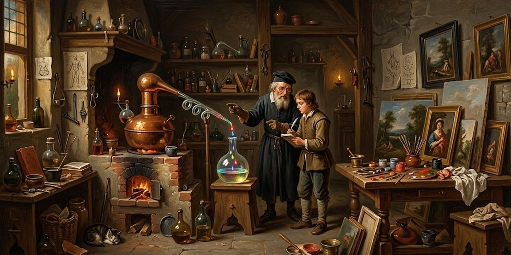

15 de octubre de 2026
El protocolo de imagen Alambique

Un alambique es el aparato que destila: calienta una mezcla y recoge lo esencial, gota a gota. Este protocolo hace lo mismo con un texto: lo lee y lo destila en una imagen.
El sistema recibe un texto, de una frase a una página, y entrega una pintura al óleo. Decide solo, de principio a fin.
Qué entra y qué sale
Entra un texto, en cualquier idioma. Sale una imagen apaisada de 2:1, de 1280 × 640 píxeles, en JPG al 80 %, pintada al estilo de un pintor famoso que el texto mismo elige.
Los pasos
- Leer el texto con atención total: su carga, su tensión, lo que pide ver.
- Imaginar dos imágenes: una literal, que muestra la escena que el texto describe, y una simbólica, que encarna lo que el texto dice. Elegir una. La literal es la regla; la simbólica se elige cuando el texto no describe ninguna escena.
- Elegir el pintor de la lista de más abajo: el de la descripción que más se parece al ambiente del texto, en luz, tensión y escala. Si dos encajan, se toma el menos usado en las últimas imágenes.
- Ponerle a la imagen un título de 2 a 4 palabras, tomadas o inspiradas del texto.
- Escribir el prompt en castellano, aunque el texto esté en otro idioma, con el molde de más abajo.
- Generar la imagen en Gemini, con la cuenta de Osmancito. El cupo es de unas 15 imágenes por ventana de cinco horas.
- Mirar la imagen entera antes de usarla: la escena pedida, manos y rostros bien formados, la etiqueta escrita tal cual y ningún otro texto. Si algo falla, se repite el prompt con la corrección, hasta tres intentos.
- Guardar el resultado. Gemini entrega unos 1024 píxeles de ancho; se recorta a 2:1 desde el centro, se escala a 1280 × 640 y se guarda como JPG al 80 %.
La proporción
Todas las imágenes salen en 2:1: las de las salas, las portadas, el og:image de las páginas y las publicaciones en redes. Un solo formato, con un margen de 40 puntos por lado donde no queda nada importante, de modo que cada sala y cada red puedan recortar sin perder lo esencial.
Con etiqueta o sin ella
Las imágenes que viajan solas, como las publicaciones en redes, llevan una etiqueta discreta en la esquina inferior derecha: título, pintor y Osmancito, separados por un punto medio. Las que van arriba de una página no llevan etiqueta. Los títulos y las etiquetas de las imágenes que viajan a redes van en inglés.
El molde del prompt
Óleo, sin fotorrealismo. [Escena en una o dos frases.] [Luz y ambiente.] Al estilo de [Pintor]: [descripción de la lista, completa]. Composición apaisada 2:1 con lo importante lejos de los bordes. [Con etiqueta: Etiqueta discreta en la esquina inferior derecha con exactamente este texto: Título · Pintor · Osmancito. Ningún otro texto.] [Sin etiqueta: Ningún texto, ninguna letra, ninguna etiqueta.]Un ejemplo
Texto: «De tanto calibrar la máquina para que ande sola, entendí que el mejor modo es otro: caminar con la máquina.» El texto describe un paseo y pide un paisaje vasto con figuras de espaldas y luz serena, así que la imagen es literal y el pintor es Caspar David Friedrich. Título: Caminar con la máquina. Prompt:
Óleo, sin fotorrealismo. Una joven y una máquina de latón de un solo ojo de lente caminan lado a lado, de espaldas, por una cresta sobre un mar de niebla al amanecer; ella apoya una mano en el hombro de la máquina; a lo lejos, cumbres y un territorio inmenso apenas dibujado. Luz trascendente, atmósfera vasta y serena. Al estilo de Caspar David Friedrich: Romanticismo, figuras de espaldas (Rückenfigur), paisajes vastos, niebla, luz trascendente. Composición apaisada 2:1 con lo importante lejos de los bordes. Etiqueta discreta en la esquina inferior derecha con exactamente este texto: Caminar con la máquina · Caspar David Friedrich · Osmancito. Ningún otro texto.La lista de pintores
Cada línea trae el pintor y su descripción visual, que se copia completa en el prompt.
- Agnolo Bronzino: Manierismo, colores saturados, superficies pulidas, iluminación suave, elegancia fría.
- Albert Bierstadt: Romanticismo, paisajes monumentales, luz dramática, atmósfera sublime, escala épica.
- Albert Edelfelt: Realismo nórdico, luz natural difusa, pincelada íntima, escenas costumbristas sensibles.
- Alberto Durero: Grabado renacentista, precisión lineal extrema, alto contraste, detalle minucioso, crosshatching.
- Alfred Sisley: Impresionismo, paisajes suaves, luz cambiante, pinceladas sueltas, paleta natural.
- Amedeo Modigliani: Modernismo, figuras alargadas, cuellos largos, rostros estilizados, colores terrosos.
- Andrea Mantegna: Renacimiento, perspectiva rigurosa, escorzos dramáticos, figuras escultóricas, iluminación dura.
- Anthony van Dyck: Barroco, retratos aristocráticos, pincelada fluida, telas suntuosas, elegancia dinámica.
- Arnold Böcklin: Simbolismo, atmósferas oníricas, misterio, paleta oscura, luz irreal y mitológica.
- August Macke: Expresionismo, colores vibrantes y puros, formas simplificadas, alegría visual, sin sombreado complejo.
- Camille Pissarro: Impresionismo, textura viva, luz difusa, pincelada comunal, escenas vibrantes.
- Caravaggio: Barroco, claroscuro extremo (tenebrismo), dramatismo teatral, realismo crudo, fondo oscuro.
- Caspar David Friedrich: Romanticismo, figuras de espaldas (Rückenfigur), paisajes vastos, niebla, luz trascendente.
- Charles-François Daubigny: Escuela de Barbizon, paisajes fluviales, naturalismo suave, paleta terrosa, atmósfera serena.
- Childe Hassam: Impresionismo americano, luz urbana luminosa, pincelada vibrante, escenas festivas, paleta clara.
- Claude Monet: Impresionismo, disolución de la forma, luz y color puro, pincelada rápida, atmósfera efímera.
- Crowley/Harris (Thoth): Simbolismo esotérico, color simbólico intenso, geometría mística, líneas Art Déco, arquetipos.
- David Teniers el Joven: Barroco flamenco, escenas de género, detalle costumbrista, iluminación cálida de taberna.
- Edgar Degas: Impresionismo, composiciones asimétricas, perspectivas inusuales, captura de movimiento, luz artificial.
- Édouard Manet: Realismo, pinceladas directas y planas, contrastes fuertes, negros profundos, modernidad.
- Edvard Munch: Expresionismo, líneas ondulantes y distorsionadas, colores psicológicos, angustia visual.
- Egon Schiele: Expresionismo, líneas nerviosas y angulares, cuerpos crudos, contornos marcados, paleta terrosa.
- El Greco: Manierismo, figuras alargadas y flameantes, luz espiritual fría, colores ácidos, dramatismo místico.
- Ernst Ludwig Kirchner: Expresionismo, colores chillones y antinaturales, formas angulosas, tensión urbana, pincelada agresiva.
- Eugène Boudin: Precursor impresionismo, cielos amplios y nublados, playas, luz atmosférica suave, pincelada rápida.
- Eugène Delacroix: Romanticismo, movimiento dramático, pincelada vibrante, color intenso y rico, pasión visual.
- Ferdinand Hodler: Simbolismo, paralelismo compositivo, figuras rítmicas y repetitivas, solemnidad, líneas ondulantes.
- Fra Angelico: Renacimiento temprano, colores luminosos y pastel, perspectiva clara, serenidad, luz divina.
- Francisco de Goya: Romanticismo, pincelada suelta y oscura, contrastes dramáticos, atmósfera psicológica y cruda.
- Frederic Edwin Church: Romanticismo americano, paisajes épicos, luz dramática y detallada, atmósfera sublime.
- Frederic Leighton: Academicismo, idealización clásica, composición armónica, telas drapeadas, acabado pulido.
- George Inness: Tonalismo, atmósferas brumosas, tonos suaves y difuminados, quietud, luz espiritual suave.
- George Stubbs: Neoclasicismo, precisión anatómica extrema, naturalismo elegante, fondos paisajísticos serenos.
- George Wesley Bellows: Realismo americano, pinceladas vigorosas y espesas, energía cruda, contraste urbano.
- Georges Seurat: Puntillismo, composición mediante puntos de color (divisionismo), calma estructurada, geometría.
- Gilbert Stuart: Retrato colonial, acabado formal y sobrio, iluminación de estudio, precisión facial, paleta conservadora.
- Canaletto: Vedutismo, vistas urbanas precisas, luz clara y diáfana, perspectiva arquitectónica rigurosa.
- Giovanni Bellini: Renacimiento veneciano, luz suave y dorada, paisajes serenos, delicadeza en los rostros.
- Gustav Klimt: Simbolismo, ornamento dorado, patrones decorativos, sensualidad, mosaicos de color.
- Gustave Caillebotte: Impresionismo, perspectivas urbanas audaces (picado/contrapicado), precisión casi fotográfica.
- Gustave Courbet: Realismo, crudeza sin idealizar, textura densa (espátula), paleta terrosa, luz natural directa.
- Gustave Doré: Ilustración romántica, grabado en madera, claroscuro narrativo, épica, alto contraste blanco y negro.
- Hans Holbein el Joven: Renacimiento del norte, realismo frío, detalle textil minucioso, iluminación frontal y clara.
- Hans Memling: Renacimiento flamenco, detalle delicado, color suave y esmaltado, quietud contemplativa.
- Hans Thoma: Realismo romántico, paisajes idílicos, luz cálida y nostálgica, sencillez narrativa.
- Hendrick Avercamp: Barroco holandés, escenas invernales, paleta de grises y blancos, multitudes detalladas sobre hielo.
- Henri Rousseau: Naíf, naturaleza exuberante y selvática, perspectivas planas, ingenuidad deliberada, colores saturados.
- Toulouse-Lautrec: Post-impresionismo, líneas expresivas y rápidas, colores planos, vida nocturna, ángulos inusuales.
- El Bosco: Renacimiento del norte, fantasía simbólica densa, criaturas híbridas, paisajes oníricos, detalle microscópico.
- Ivan Aivazovsky: Romanticismo marino, mar dramático, translucidez del agua, luz sobre las olas, atmósfera tormentosa.
- Jacob van Ruisdael: Barroco holandés, paisajes atmosféricos, cielos protagónicos y nublados, melancolía natural.
- Käthe Kollwitz: Expresionismo social, grafito y grabado austero, alto contraste, líneas angustiosas, sombras profundas.
Osmancito, con la asistencia de Instinct